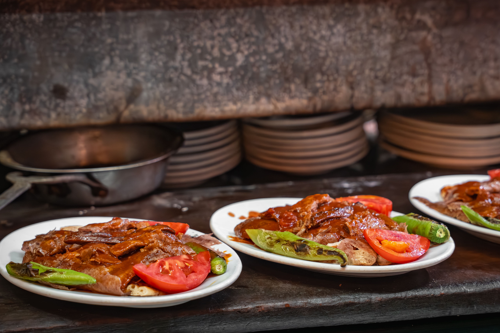

Iskender is traditionally made of thinly sliced Döner meat (typically lamb or beef) placed over pieces of toasted pita bread but this recipe is a chicken version of Iskender Kebab. We will use chicken breasts, some pita bread rounds, onions, yogurt and more in this recipe.